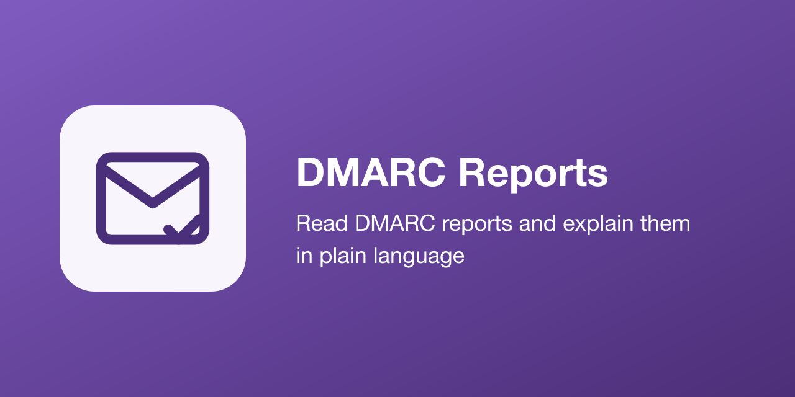

Mail providers such as Google and Microsoft send daily DMARC reports to the address in your domain's DMARC record. They are XML files nobody reads.
This module reads each report as it arrives and tells you, in plain language, who sent email as your domain, what passed, what failed, and what to fix.
Point an incoming mail server at the reporting mailbox; every report becomes a DMARC report record with its findings.
Each sender is named with what it means and what to change, instead of raw SPF and DKIM results.
Reports stay in your own Odoo: no third-party DMARC dashboard needed.
This module is free. Help installing, setting up or using it is available from Meskis Works with a support contract: sales@meskis.net.